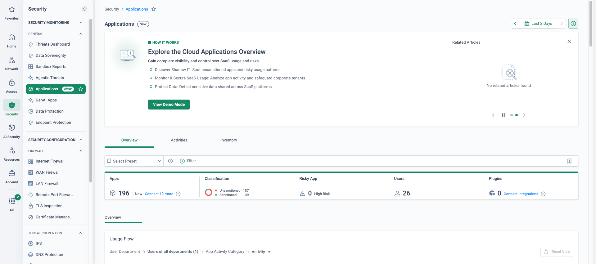
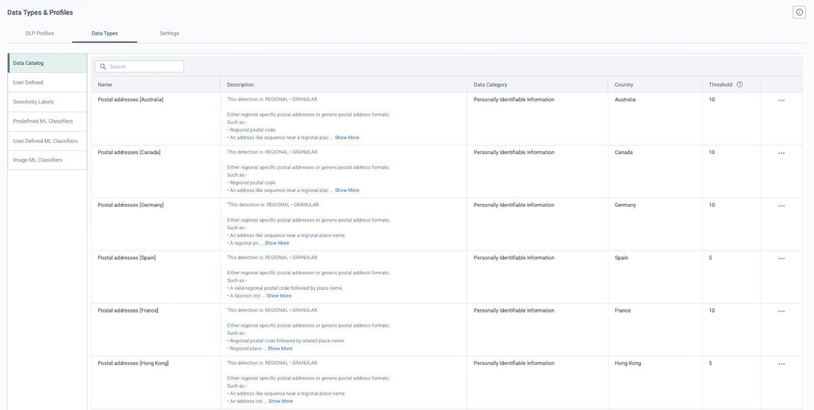
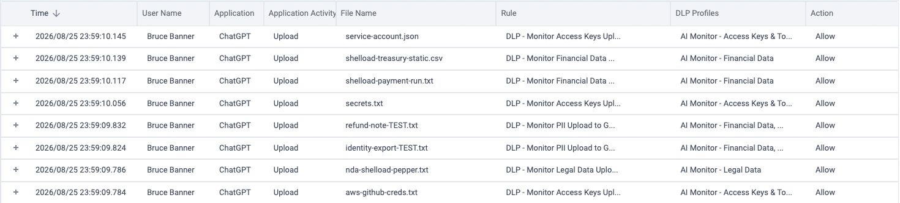
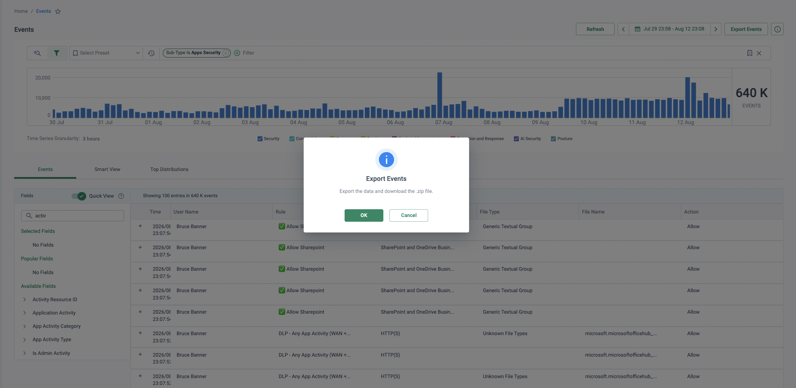
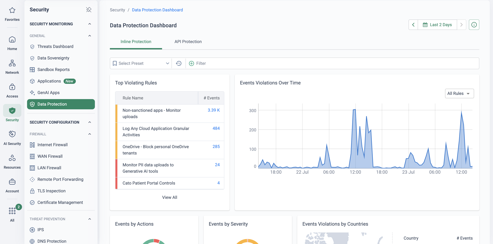

Why this matters
The business case for SaaS and cloud application access is being written by the business, not by IT. Whichever industry your prospect is in, the processes that hold their most sensitive data are moving into cloud apps — and often into apps security never sanctioned.
The objective: see every cloud and AI application in use, govern how it is used, and make sure sensitive data only moves where policy says it can.
| Industry | What is driving data into SaaS & cloud apps |
|---|---|
| Insurance | Policy admin systems · self-service portals · claims automation |
| Manufacturing | ERP · supply-chain integration · predictive maintenance |
| Finance | Digital banking · automated compliance monitoring & detection · fraud detection |
| Retail | E-commerce storefronts · POS · inventory & supply-chain management |
| Legal | Compliance & risk management · case management · contract lifecycle management |
Sound familiar?
A week in the life of the CISO whose users have discovered the cloud faster than security has:
Ungoverned agentic AI
Agentic AI identities operating with no governance — nobody can say what data they touch or which apps they reach.
Privilege sprawl
Users granted local admin privilege, quietly installing whatever cloud client or browser extension gets the job done.
Third parties on VPN
A compromised third party accessing the network over legacy VPN — with a clear route to the data-bearing applications.
“How many cloud applications are in use across your organisation right now — and if I asked which of them hold customer PII, how long would that answer take?”
The data security use-case family
Cloud Discovery & Control
Discover and control access to every sanctioned and unsanctioned cloud and AI application — shadow IT and shadow AI.
Compliance & Governance
Assess each cloud application's security posture against compliance frameworks such as ISO 27001, SOX and PCI-DSS.
Data Loss Prevention
Detect and prevent the sharing of sensitive data — PII, PHI and payment-card data — across web, SaaS and on-prem applications.
Where this sits in the Cato SASE platform
- Office and remote users already send every flow through the Cato PoP; CASB and DLP are simply switched on.
- Inline, the PoP classifies each app, scores its risk and controls the activity per user and group.
- Sanctioned SaaS is allowed and monitored; a risky GenAI app has uploads limited; card data out is blocked.
- Out-of-band API integration governs data already at rest in the sanctioned SaaS tenant.
One inspection point for data everywhere
Because every user and site already sends its traffic through the Cato PoP, CASB and DLP are not new deployments — they are policies switched on where the traffic already is. Inline, Cato classifies the app, scores its risk and controls the activity (upload, download, share) per user and group. Out-of-band, API integrations with sanctioned SaaS tenants extend the same governance to data already at rest.
Discovery without deployment
Traffic already traverses the PoP — shadow IT and shadow AI discovery needs no agents, log uploads or extra proxies.
Inline + out-of-band, one policy
Real-time control of live traffic plus API scanning of data at rest in sanctioned tenants — one console, one event stream.
Granular activity control
Not just allow or block: permit read-only use of a risky app while blocking uploads, shares or logins — per user group.
Same engine for SaaS and on-prem
One DLP policy follows the data whether the application lives in M365 or in the London DC behind a Socket.
Six scenarios — and the licence that unlocks each
The working table for scoping conversations: what the customer is trying to do, why it hurts today, and exactly which Cato capability (and licence) answers it.
| Use case | Challenge | Cato solution & licence |
|---|---|---|
| Discover every cloud app & service in use | Shadow IT introduces unknown, unmanaged risk into the environment. | CASB licence. Application Control rulebase in Monitor mode — full visibility before any enforcement. |
| Inline & out-of-band SaaS application control | Users need safe access to sanctioned and shadow apps under an enforced corporate policy. | CASB licence. Sanctioned Apps category + Application Control policy; out-of-band via native SaaS API integrations. |
| Assess cloud-app risk & compliance posture | Prove the app estate meets internal security policy and industry or compliance requirements. | CASB licence. Cloud Apps Dashboard + Application Analytics — risk scores and compliance attributes per app. |
| Stop data exfiltration from corporate apps | Confidential corporate data is the crown jewels — it must not be exfiltrated or misused. | CASB + DLP licences. Data Control rules configured within the Application Control policy. |
| Visibility into corporate data stored in the cloud | Understand where corporate data actually sits across the various cloud applications. | CASB licence. Out-of-band SaaS API integrations, scoped by the Sanctioned Apps category and Application Control policy. |
| Threat protection for cloud threats | Malware and ransomware attacks target the data stored in cloud applications. | IPS licence. IPS protection policies; custom category of high-risk apps enforced by the Internet Firewall. |
How to run the demo
Ask which SaaS apps they've sanctioned, and which they suspect are in use anyway. The demo lands hardest when the discovery dashboard surfaces an app they didn't name.
-
Open with discovery
Monitor → Cloud Apps Dashboard
Show the full cloud-app estate: how many distinct applications are in use, newly seen apps, and the risky ones. Compare against the number they expected — the gap is the shadow IT conversation.

Shadow AI gets its own view (demo tenant, fictional data): Security → GenAI Apps counts 52 unsanctioned GenAI apps against 7 sanctioned over two days, with blocked and allowed events side by side — the same expected-versus-found gap, scoped to AI tools. -
Drill into an app's risk score
Monitor → App Analytics
Pick an unsanctioned GenAI or file-sharing app the dashboard surfaced. Walk the risk score and its inputs — compliance certifications held, security capabilities, popularity — then show which users and sites are actually using it.
-
Bring the app under control
Security → CASB
Create an application-control rule for that unsanctioned app: allow browsing but block uploads, or block it outright for all but a pilot group. Point out this is granular activity control, not a crude allow/deny.
-
Protect the data itself
Security → DLP Configuration
Show a Data Control rule that blocks uploads containing credit-card numbers to non-sanctioned destinations. Highlight the pre-built data types (PCI, PII, PHI) and how the same profile applies across web, SaaS and on-prem apps.
-
Prove it with the event and evidence
Monitor → Events
Trigger (or pre-stage) a credit-card upload and open the resulting data incident: user, application, matched data type, action taken — and the secured evidence file for the investigation team.

The data incident in CMA (demo tenant): blocked credit-card upload with matched data types, the rule that fired, and secured forensic evidence.
How to prove it in the customer's tenant
The CASB/DLP PoV is deliberately monitor-first: every piece of evidence comes from the customer's own traffic, and nothing blocks until the match report has been reviewed with the people who own the data. Agree the success criteria below before configuring anything — the frame for that conversation is Running a Cato PoV.
| Success criterion | What is demonstrated | Evidence artefact | Where it lives |
|---|---|---|---|
| Shadow-IT inventory delivered | Full cloud-app estate discovered from pilot traffic — sanctioned vs unsanctioned counts, risk scores, newly seen apps. | Dated dashboard screenshot + app list reviewed against what they thought was in use | Monitor → Cloud Apps Dashboard |
| DLP matches their data, in monitor mode | A Data Control policy built from their data types fires on real transfers; false-positive rate reviewed and tuned with data owners. | DLP events export (CSV) annotated true/false positive per row | Monitor → Events |
| One rule promoted to block | A high-confidence rule moves from monitor to block, with an agreed user-notification message shown to the pilot user. | Blocked event + screenshot of the Client notification | Monitor → Data Protection Dashboard |
| Incident walk-through end to end | One violation followed from event to named user to secured evidence — the investigation workflow their team would actually run. | Data incident detail: rule, matched data types, user, evidence panel | Monitor → Events |
- Licences: Application Control is included in the CASB licence; enabling Data Control rules additionally requires the DLP licence. Confirm both trials before the workshop.
- TLS inspection staged first. Application Control rules require TLS inspection to see the traffic they match — without it there are no app activities and no content to scan. Stage it on the pilot group per the TLS Inspection: Staged Rollout Playbook, with scope and exclusions approved by whoever owns privacy.
- Identity integration connected and the pilot group syncing — attribution is the difference between "an IP uploaded this" and "Priya uploaded this" (see Identity Integration Design).
- Scope: one pilot site (e.g. a Bristol-style branch socket) plus a pilot group of Cato Client users. Client notifications need a remotely connected Windows, macOS or iOS Client.
- Data owners named: one person per data category (finance, HR, customer PII) who will sit in the match-report review. Without them, tuning stalls.
Configuration walkthrough
Menu names below follow the current CMA navigation; older tenants show the same policies under Security → CASB / DLP Configuration.
-
Stage TLS inspection on the pilot group
Security → TLS Inspection
Inspect-first is the gating prerequisite: Cato's KB is explicit that Application Control rules (and category rules with activities) require TLS inspection for the traffic they match (Managing the Application Control Policy). Scope inspection to the pilot group only, deploy the Cato certificate, and let it run clean for a few days before any CASB evidence is promised.
-
Deliver the shadow-IT inventory — zero configuration
Monitor → Cloud Apps Dashboard
The first evidence drop needs no policy at all: with pilot traffic flowing, the dashboard builds the app inventory — top applications, sanctioned vs unsanctioned classification, risk scores and risky GenAI apps (Using the Applications Dashboard). Mark the apps the customer confirms as sanctioned directly from the dashboard, then export the inventory review as dated evidence. The gap between "apps we expected" and "apps we found" is usually the moment the PoV earns its keep.

Security → Applications — what the zero-configuration evidence drop looks like (lab tenant, fictional identities): two days of traffic and the inventory already stands at 196 apps for 26 users — 157 unsanctioned against 39 sanctioned. Point at that ratio: it is the gap between "apps we expected" and "apps we found" in one widget, before a single policy is written. Mark the customer's confirmed apps as sanctioned from here, then let the Inventory tab — per-app risk scores, users and volumes — carry the dated export. -
Build DLP profiles from their data types
Security → Data Types & Profiles
Create a Content Profile per data category agreed at the workshop, combining predefined data types from the Data Catalog (hundreds of country-specific types — pick the UK variants, not the whole catalogue) with the predefined ML document classifiers (HR, Finance, Legal, Medical and so on) where the customer's concern is document families rather than patterns (Creating DLP Content Profiles). Note each data type's Threshold — the minimum occurrences before it activates — you will tune these in step 5. Cap ambition: a Data Control rule evaluates at most 20 data types across its profiles, and files are scanned up to 50 MB.

The Data Catalog is where the PoV gets specific (demo tenant): pick the regional data types that match the customer's data, and note the per-type occurrence thresholds — the main tuning lever for step 5. -
Add Data Control rules — monitor posture, pilot scope
Security → App & Data Inline
Add Data Control rules scoped to the pilot group as source: their profiles against upload activity to Any Cloud Application, plus a narrower rule for GenAI tools if that is a named concern. Run every new rule in a non-blocking posture with Events tracking enabled — the KB's own guidance is to run new rules permissively with events on, review what would have been blocked, and only then enforce (Creating the Data Control Policy). Nothing blocks in week one.

The shape a PoV policy should grow into (demo tenant): monitor rules gathering evidence (logins, attachments, risky-app usage) sitting above the small number of high-confidence block rules they justify. -
Review the match report with the data owners
Monitor → Events
After one to two weeks of monitor-mode traffic, filter Events to the Data Control rules and export — the Events page exports up to 250,000 events to a file (Analyzing Events in Your Network). Sit with the data owners and mark each match true or false positive. Tune by raising the occurrence threshold on noisy data types, switching a profile from Any (OR) to All (AND) where two types must co-occur, and validating fixes with the KB's test-file upload check before re-running. The agreed false-positive rate on this report is the number that decides which rule gets promoted.

What the match report looks like before it leaves the platform (lab tenant, fictional identities and synthetic test files): eight uploads to a GenAI app caught by four Data Control monitor rules — PII, financial data, access keys, legal — each row attributed to a user, a file, a rule and a profile, every action Allow. The same engine and the same review works whatever the destination app; here the destination class happens to be Generative AI Tools (Recommended DLP Configuration to Monitor AI Apps). 
The match report leaving the platform (lab tenant, fictional identities): a fortnight of Apps Security events — 640,000 of them — filtered, then handed to the data owners as a file. The export is the artefact the tuning session runs on; the histogram above it is what tells you whether a spike is a real change in behaviour or a noisy data type you are about to fix. -
Promote one rule to block — with the user told why
Security → App & Data Inline Access → Client Connectivity Policy
Pick the single highest-confidence rule from the review (blocking card numbers to personal storage is the usual winner) and flip it to Block. Before it goes live, enable security-policy user notifications for the pilot group and attach a notification template written with the customer — users who are told what was blocked and why file tickets; users who see a silent failure file complaints. Have a pilot user (Marcus) trigger it with a seeded test file and screenshot the Client notification as evidence.
-
Walk one incident end to end
Monitor → Data Protection Dashboard
Close the PoV loop the way their SOC would: start at the Data Protection dashboard (Inline Protection tab — top violating rules, events by action, violations by data profile, over a range of up to 90 days; Using the Data Protection Inline Dashboard), drill from the seeded block into the event, and walk the attribution chain: rule fired → matched data types → named user and device → file name and destination → secured evidence. The incident anatomy is the screenshot in the demo runbook above; the full investigation workflow is Data Breach Investigation with DLP Forensics.

What the pilot's DLP readout looks like (demo tenant): Top Violating Rules led by the monitor-mode upload rule, a personal-OneDrive block enforcing, and PII uploads to generative-AI tools counted — with the violations timeline beneath. This is where the drill-down to a single incident starts.
Troubleshooting — when the evidence doesn't land
Matches not firing at all
Almost always TLS inspection scope: app rules only see traffic TLSi actually inspects. Check the pilot user's traffic is in the inspect scope and not caught by a bypass/exclusion rule, then re-test.
Matches missing on some files
DLP scans files up to 50 MB, and the Data Control policy fails open by default — oversized or unscannable files pass without a match. Check file size and type in the event detail; only move to fail-closed with the customer's eyes open.
Over-matching / noisy rules
Raise the data type's occurrence threshold, require co-occurrence with All (AND) profiles, or step up to Exact Data Matching for their actual records. Validate each change with the test-file check before the next review.
App shows as a URL category, not activities
Granular activities (Upload, Login, Add Attachment…) exist only for applications classified in the App Catalog — a plain website resolves to a URL category with no activity control. Check the app's type in the catalogue before promising activity-level rules for it.
Block works, no notification shown
Check the user is connected remotely on a Windows, macOS or iOS Client with OS notifications not suppressed (Focus / Do Not Disturb), that security-policy user notifications are enabled for the pilot group, and that the template is attached to the rule that fired.
Events show IPs, not names
Identity sync lag or an unsynced pilot user. Confirm the IdP integration is populating the pilot group before the match-report review — unattributed evidence persuades nobody.
Gotchas & exit
- Licence boundary: the app inventory and activity control are CASB-licence evidence; every Data Control result additionally depends on the DLP licence. Keep the wrap-up honest about which licence bought which slide.
- Windows of evidence: the Data Protection dashboard reads back at most 90 days — export the match report and dashboard views as you go rather than reconstructing at the end.
- Monitor mode needs traffic time: a credible false-positive review wants one to two weeks of real pilot traffic. Don't book the data-owner session for day three.
- ML classifiers have edges: OCR image scanning does not apply to ML Classifier data types — if screenshots-of-spreadsheets are the customer's fear, prove that path with OCR on pattern-based types instead.
- Clean exit: disable or delete the PoV Data Control and Application Control rules, remove the notification template, revert the TLS-inspection scope added for the pilot, and hand over the evidence exports. Sanctioned/unsanctioned tags on the app inventory are worth leaving — they are the start of the production policy.